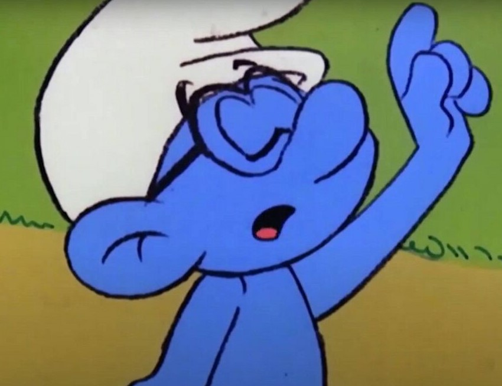

Brainy Smurf
Profile:
I am determined, ambitious and smart.
Ready to give you the best advice.
You should always listen to the smart Smurfs, like me.
Education:
- Master of Wisdom, Smurf Logics - Smurf Village Institute of Smurfing (1952-1999)
- Bachelor of Advice, Smurf Management - Smurf Village Institute of Smurfing (1920-1950)
Skills:
- Master of problem solving.
- Defensive ideas against Gargamel's attacks.
- Leadership
- Mastery in magic (only second to Papa Smurf)
- Humor
Experience:
- Asistant in Papa Smurf Labs (1900-today)
- Vice-President of Smurf Village (1949-today)
- King of Smurfs in the absence of Papa Smurf (1988)
Awards & Achievements
There must be hundreds. Unfortunately don't remember any of them.